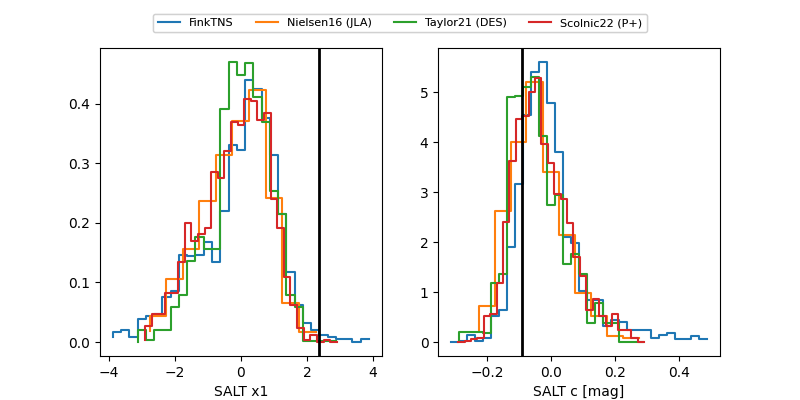

FINK: ZTF25abpvoli
Lasair: ZTF25abpvoli
ALeRCE: ZTF25abpvoli
TNS: 2025xkg
YSE: 2025xkg
ZTF25abpvoli (ztf,fink)
2025xkg (tns,yse)
ATLAS25lgl (atlas)
equatorial (ra, dec) = (342.5914,+23.66759)
galactic (l, b) = (90.1909,-31.39691)

last ztfg=19.77
3 ztfg detections